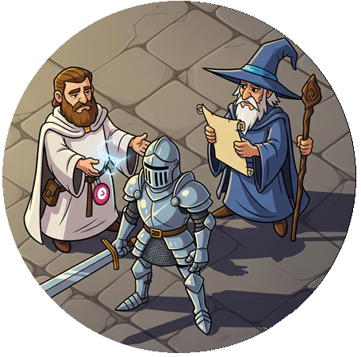

Check out that Wizards magic Staff !
As part of a group of friends “Games night” I decided to create a very simple introduction to RPG Dungeons and Dragons by throwing all the rules away and making a game that a newbie player could begin within 5 minutes. Most of the graphics for the characters, objects and monsters were created by Gemini 2.5 Flash, the map and story is totally by me.
I have done most of this by using 2 decks of playing cards instead of the dice, which are shuffled and re-used as necessary, and only worrying about minimal player/monster stats.
I say the game is for newbies, but that is just for the player characters, and obviously NOT the dungeon master. Like all RPG D&D games the poor old DM (me in this case) will have to at least know the story, and know where the key events and points are to move it along. The google doc is broken into chapters to help this so when you reach room 6 just go to that chapter, and with all the rules thrown out the DM will need to spend a few minutes acquainting themselves with the new ones. Of course this is not D&D, it was meant to be a precursor to D&D to see how the guys liked the whole RPG thing and then whether enough of them can get interested enough to go on and play the Dragons of Stormwreck Island Starter set.
In a Nutshell
3-4 players wake up in beds in a dungeon after being transported to a parallel world and resurrected from the dead by one of the gods who rules it (..blah-de-blah). The god (whose picture you can rise majestically above you as it speaks) gives them a few basic tips, some spiel about the world then tells them the challenge is to get out of the dungeon they are in.
We are only worried about a very small set of character and monster attributes, namely the characters health, and their attack skills, and instead of dice we are using 1 (or 2) packs of normal playing cards.
The game does not assume the player knows anything about D&D nor for them do any of the battle calculations, they are only there to live their fantasy in any way they want. This is because, as anyone who has played the game knows, it is all about the role-playing and how well the characters can make weird stuff up in order to progress in the game; Therefore having less rules should in theory allow some more interesting scenarios. Though the DM might get a headache trying to keep track of it all.
Our first game with it is tonight, it will either be fun or a total disaster. If it goes well I will publish the PDF link here.
The update (the day after!)
Well firstly the link: PDF (Public Domain so free to use as you wish)
And secondly, thanks to Allison, Ando and Jono for being my Guinee-pigs for the trial run.
I think game went a bit better than I expected. As a complete newbie DM, and the one who wrote the story, I still managed to forget the rules, and it didn’t help that the players were obviously mostly set on killing everything; Yes, I added a fair maiden getting re-incarnated at the alter of rebirth to give the guys a clue as to what it was, and the second she stepped off the altar was axed by one of them and almost skinned to get her bones. The poor chicken who was there to also give clues also had to run away numerous times to prevent the same.
Look this little beastie in the eye and tell me you want to kill it !
The chicken and the picture of the God AARON were last minute additions which actually made the game a bit more fun. If the prayer book was ever used I made them say the prayer properly to ask the god what they wanted then popped the picture of the god in the clouds (Think the god from Monty Python and the holy grail) to give them a cryptic answer.
One other thing I did that made the game fun was get a big whiteboard that fitted on the table and drew the map out as they discovered the various rooms. Like I said, newbies do have a tendency to want to kill everything and hack every door down rather than do what you want. What they all also did was play women characters; With one woman and two men, I thought my game had a good chance I would get a man but no they screwed up the ending of the game from the outset and I had to change the ending on the fly so that the temple rejected women through the portal as opposed to allowing women to pass through the portal.
The guys did enjoy the little cut outs I made of the monsters, and kind of had to put me right every time I made a mistakes especially during monster battles. I also had a last minute idea to get some jelly snakes that the players could eat when they killed them, but like a lot of things I forgot when the time came. (I blame the nice red-wine)
All in all a fun night though, the game we had lasted 4 hours (3 for the game and an hour reminiscing about it afterwards), someone even prompted me to write it up so I guess it went well. Will I do it again? well maybe, I do have a lot of time free these days and I guess it is only going to get easier to do stuff like this. Anyway have a look and give it a go and the next step is to try and learn the Starter set and give the real game a go sometime. I’m still reading through the book for the starter set and it might be a little intimidating to go all in, I’m sure its only meant as a rough guideline though!